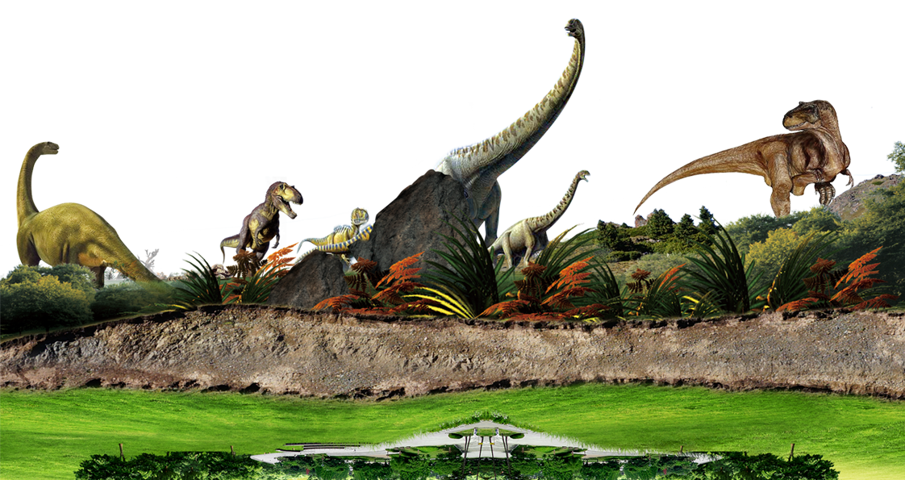

Los dinosaurios (Dinosauria, del griego δεινός deinós 'terrible' y σαῦρος sauros 'lagarto': 'lagartos terribles') son un grupo de saurópsidos que aparecieron durante el período Triásico. Aunque el origen exacto y su diversificación temprana es tema de activa investigación, el consenso científico actual sitúa su origen entre 231 y 243 millones de años atrás. Fueron los vertebrados terrestres dominantes durante 135 millones de años, desde el inicio del Jurásico (hace unos 200 millones años) hasta el final del Cretácico (hace 66 millones de años), cuando la mayoría de los grupos de dinosaurios se extinguieron durante la extinción masiva del Cretácico-Paleógeno que puso fin a la Era Mesozoica. El registro fósil indica que las aves evolucionaron a partir de dinosaurios terópodos durante el período Jurásico y, en consecuencia, muchos taxónomos consideran que las aves forman un subgrupo dentro de los dinosaurios Algunas aves sobrevivieron a este acontecimiento, y sus descendientes continúan el linaje de los dinosaurios hasta nuestros días.
Los dinosaurios son un grupo diverso de animales desde el punto de vista taxonómico, morfológico y ecológico. Usando la evidencia fósil, los paleontólogos han identificado cerca de 500 géneros distintos y más de mil especies diferentes de dinosaurios no avianos. Los dinosaurios están representados en cada continente tanto por especies existentes como por restos fósiles.9
Algunos son herbívoros, otros carnívoros, ovíparos u omnívoros. Los primeros dinosaurios fueron bípedos, pero muchos grupos incluyeron especies cuadrúpedas, y algunos podían alternar los dos tipos de locomoción. Los cuernos o crestas son comunes a todos los grupos de dinosaurios, y algunos grupos desarrollaron modificaciones esqueléticas como armaduras óseas y espinas. La evidencia sugiere que la puesta de huevos y la construcción de nidos fueron rasgos que compartían todos los dinosaurios. Muchos dinosaurios eran de gran porte — el dinosaurio saurópodo más grande pudo haber alcanzado una longitud de 58 metros y 9,25 metros de altura. Sin embargo, la idea de que los dinosaurios no aviares fueron todos gigantescos es un error basado en el sesgo de conservación, ya que los huesos grandes y fuertes tienen más probabilidad de durar hasta que se fosilicen. Muchos dinosaurios eran bastante pequeños: Xixianykus, por ejemplo, medía unos 50 cm (centímetros) de largo.